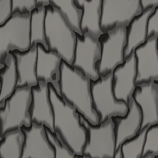

Trees · spec sheet
White oak
Quercus alba · Rounded lobes, pale scaly bark; russet to wine-red in fall.
In films
3.4%Georgia basal area
4.0%North Carolina basal area
4.1%Western NC basal area

Leaf
Bark

Palette
SummerFall 1Fall 2Fall 3Fall 4
Season calendar
The leaf colour and cover the season engine draws on each day; ticks mark leaf-out, the start of the turn and of the drop.
Facts
- Leaf
- whiteoak · 15 cm · alternate
- Leaves a spray
- 14-20
- Leaf out
- Apr 5
- Turns
- Nov 8, over 30 days
- Drops
- Nov 26, over 70 days
- Bark preset
- whiteoak
- Built
- 12 trees
- Sprays a tree
- 6,697 (median)
- Limb triangles
- 91,108 (median)
- FIA code
- 802
Forms
| Form | What | Height m | DBH cm | Crown base | Crown radius m | Crown envelope |
|---|---|---|---|---|---|---|
| Y | young, forest edge | 9.0 | 13 | 20% | 2.8 | ovoid |
| F | forest tree, tall oval | 26.0 | 55 | 42% | 6.8 | ovoid |
| M | mature, broad, wider than tall | 24.0 | 75 | 26% | 9.8 | round |
| O | open pasture giant: a wide dome on low, flat limbs | 21.0 | 100 | 13% | 11.5 | dome |